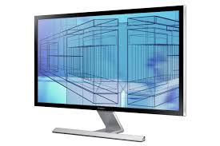

Ein Computermonitor ist ein Bildschirm, der primär zum Anschluss an einen Computer gedacht ist. Insbesondere in den Jahren zwischen 1985 und 2005 entwickelten sich Fernsehgeräte und Computermonitore sehr weit auseinander (Qualität, Bildraten, Signale, Pegel, Stecker), seit 2010 wachsen diese wieder zusammen.
